Se despliega el form de Consulta Avanzada para usuario Avanzado, donde contiene las opciones: Creacion, Conulta, Editar y Buscar/Eliminar.

Creacion de consulta contiene dos opciones para el usuario, consulta simple y consulta compleja.
La consulta Simple solo debera llenar los siguientes campos
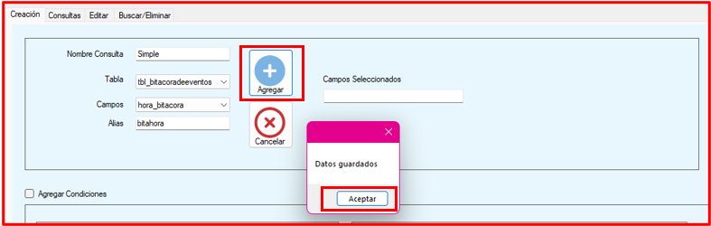Al dar Agregar en la consulta Simple se generara la cadena
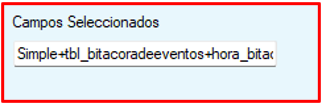Al crear una consulta compleja debera llenar todos los campos requeridos. Para generar la consulta compleja debera llenar los siguientes campos.
Deberar llenar los campos de Consulta Simple y Consulta Compleja
Al dar Agregar en la consulta Simple se generara la cadena con los campos seleccionados
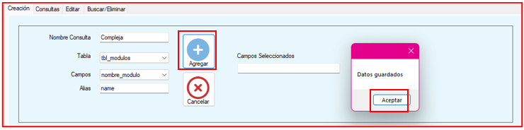Al dar Agregar en la consulta Simple se generara la cadena
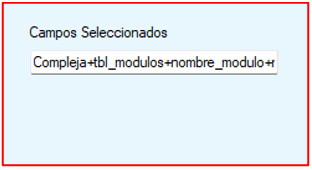Click en Agregar condiciones
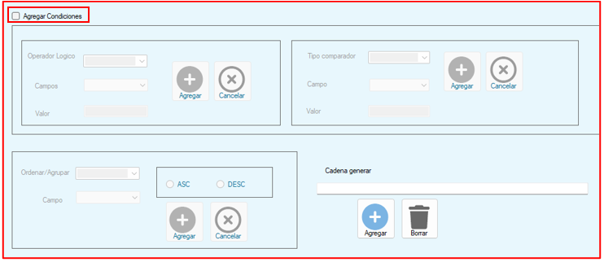Llenar campos del apartado Condiciones Consulta Compleja
Al llenar los campos debera daclick en Agregar y lanzara mensaje de Datos guardados, dar Acepatar
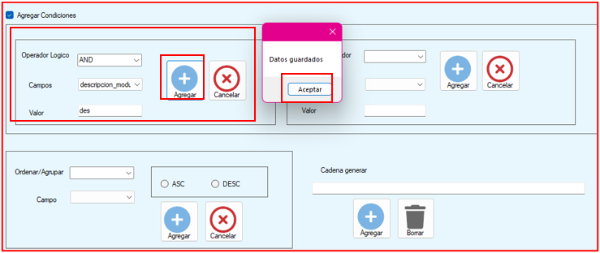Al llenar los campos debera daclick en Agregar y lanzara mensaje de Datos guardados, dar Acepatar
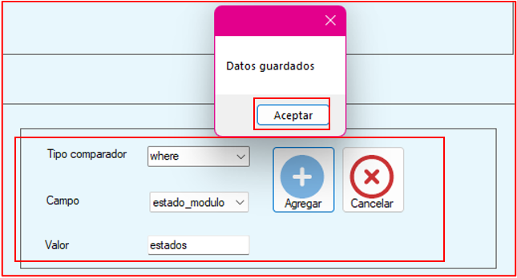Al llenar los campos debera daclick en Agregar y lanzara mensaje de Datos guardados, dar Acepatar
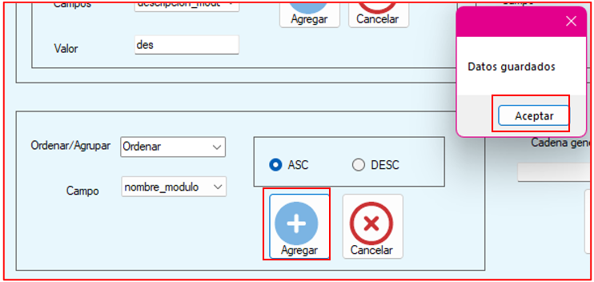Al llenar los campos debera daclick en Agregar y lanzara mensaje de Datos guardados, dar Acepatar
Al dar click en Agregar se generar la cadena de todos los campos
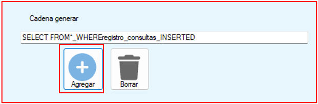Click en boton eliminar, eliminara y limpiara la consulta de creacion
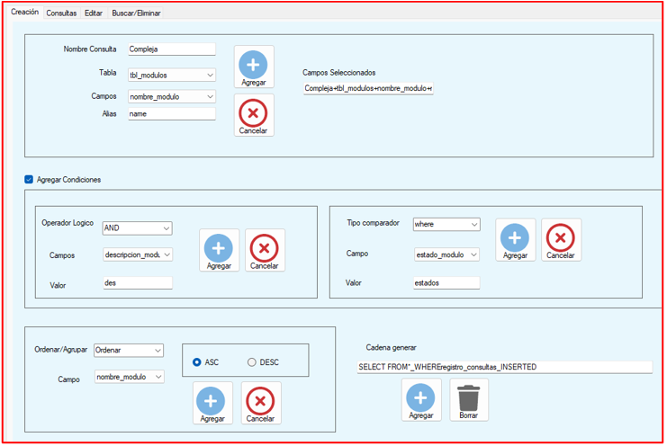Click en boton eliminar, eliminara y limpiara la consulta de creacion
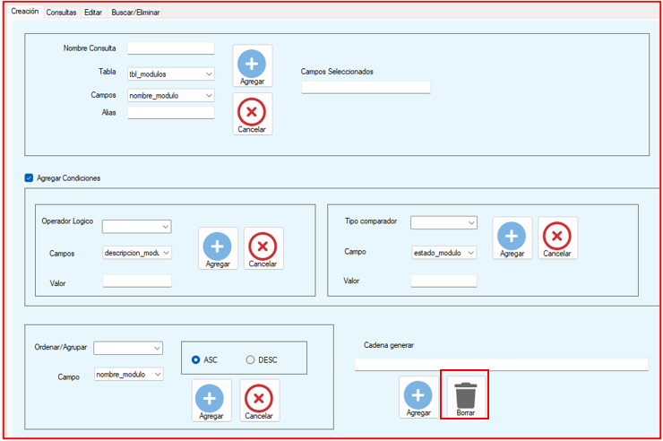